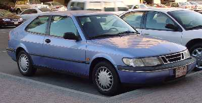
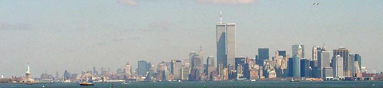
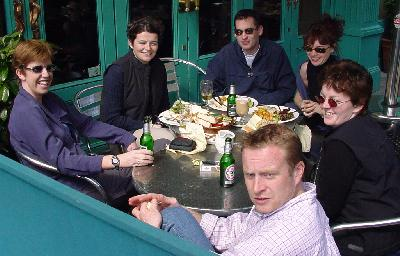
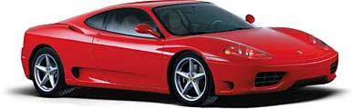
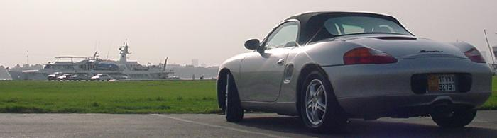

15 July 2000
Point your mouse over me to see the CLP
salute
I can't believe how long it's been since I last updated this. I
guess I've just been busy. (Very busy)
Work has been flat out, and when I haven't been working, I've been
out brushing up on my golf swing. Even starting to get a slight
draw going now and again.

After the purchase of the Cherokee fell through, I started
looking around for something else. I needed wheels, and when I went
and saw the Saab I was instantly sold. It seemed pretty cheap for
what was still a very new car.
There are a few odd things about it. Like the ignition is on the
floor between the two seats. But it has definitely grown on me.
Sian and I headed off to New York for the weekend. It was a bit
of a spur of the moment travel decision. Just something different
to do I guess. We got there on the evening of St Patricks day, but
not quite in time to catch the parade. (Saw it on telly though)
Did the typical tourist stuff. Taking tons of piccies, Staten
Island ferry past the Statue of Liberty, the top of the Empire
State building, looked around Tiffanys (didn't ask what the
cheapest thing in the store was though) and generally had a great
laugh. It has to be one of the most filmed and recognisable places
in the States. Although, I had no idea what times square was going
to be like. In fact, when we did get there I thought, 'Is this
it?'. It just seemed too small.
Central park was pretty cool. We were staying on Broadway near
the top of central park. To our disappointment we didn't witness
any muggings, but I guess the cold was keeping the crims indoors.
In fact, when we were landing I wondered whether it was such a
smart idea to visit. All over the place I could see patches of
frost or even snow. Brrrr....

I spent another month in Dubai when it was time for another trip back to London. This time to surprise Liz who was having her 30th birthday.
Got to hand it to Steve. It was pretty well organised! He drip-fed Liz surprises over the entire weekend. Liz thought that it was just the two of them heading off to Dubai, but every now and again some new faces would show up and join in the celebration. I feel a little guilty that I've been to Dublin, but all I've seen is the inside of several pubs. I guess that makes it a typical Dublin experience...

The morning after!
But then it was back to Dubai once again.
Sat (a contracter from the UK who came over to help out on the
project) and I were planning on hiring the Ferrari 360 Modena the
day before Sat left. But some Sheikh had decided he wanted to go
have a play in it instead. (We only just missed out on it)
Perhaps it's for the best. We could still do it in the UK, but
Dubai has such great roads, I bet we could have gotten close to its
estimated top speed of 180mph+. (Definitely won't be doing
that in the UK!)
Still, while it would be a day to remember, the cost was pretty
high. I mean, I could fly to New Zealand from London, return,
twice, and it would still cost less than hiring the car for a day.
Arrghh!

Still. Damn tempting!
It's amazing how fast deadlines approach. But we caned out the Skywards project in amazingly short time. Struggled against adversity (rolling requirements and our 17" monitors not arriving until the day after we finished development to name a couple). A few small bugs snuck through the testing phase which had been drastically shortened, but all in all it turned out okay. Everyone did themselves proud to turn the project out on the deadline with something like 98% feature complete.
The Skywards Development Team
-Satinder
-Salindra -Rizan -Rizni
Well, now that I had finished the contract I was working on, I was looking at returning to the UK. That was my intention, but I got an interesting offer to stay on in Dubai for another 6 months so had to take it into consideration.
It was pretty flattering to be offered a role out here. The work sounded interesting, and the pay wasn't too shabby. There was more money on offer in the UK (Even taking into account the no-tax deal), but in the end I decided to take the Dubai contract. It's work I am interested in and I still want to have a bit more of a look around the place. Also, my golf pro is here, and for once I really feel I'm getting the hang of the game. I guess I could have flown out for lessons...
One good thing was I managed to get a couple of weeks off to spend in the UK. In fact, I still hadn't decided until I got to the UK. It took me a few days, but eventually, staying on in Dubai for another 6 months seemed like the right choice to make. So, back I came.
Actually I'm still in a little bit of shock over this one. I can't believe I did it. One of the guys at work was going down to the showroom to pick up his porsche that he had just bought. It's a red 911 convertable. Very nice bit of kit. And I was pretty tempted as well, so I test drove another 911 (96' british racing green hardtop) and while I enjoyed it, I found the left hand drive position a little disconcerting when you have to change gear. It had a 6 speed gearbox, and twice I took off in third, the gate was so wide. Took a bit of getting used to. I guess I've been driving for so long in the right hand seat, I just feel totally uncoordinated in the left. (Actually, I'm even a bit unco in the right, so go figure)
We got back from that embarrasing test drive, and sitting right next to the 911, was this lovely boxster. 1999, 2500cc, 8000km, tiptronic, silver with black sport interior (leather bucket seats and graphite trim), 17" alloys, blahblahblah... So, while I was hot, I took that out for a quick squirt.

What a lovely car. Now, while I was daydreaming about buying one, I wasn't really that serious. It's a lot of money for a vehicle, and it probably makes a lot more sense to save my money for a house or something. But after having a night to think about it, I thought, what the heck. It's a short life, I might as well enjoy it! So five days later I was driving a porsche. Sure it wasn't the most sensible of decisions, but the funny thing is, WHO CARES! Not me (Especially not when I'm driving the thing).
Future plans
Well, now I'm broke. Or at least, not as flush as I was. So I'm
having to tone things down a little. I've got a couple wee trips to
do. I'm hoping to visit Lahore in Pakistan, and possibly do a
course on UML in India. Also I've got a couple of hops over to the
UK that I'm keen on doing.
In October I'm looking at returning to NZ for my cousin's wedding,
but that's about the only definite trip so far.
Meanwhile, I'm going to enjoy the new car. Keep out of the heat as much as possible. Play a little tennis, read a few books...